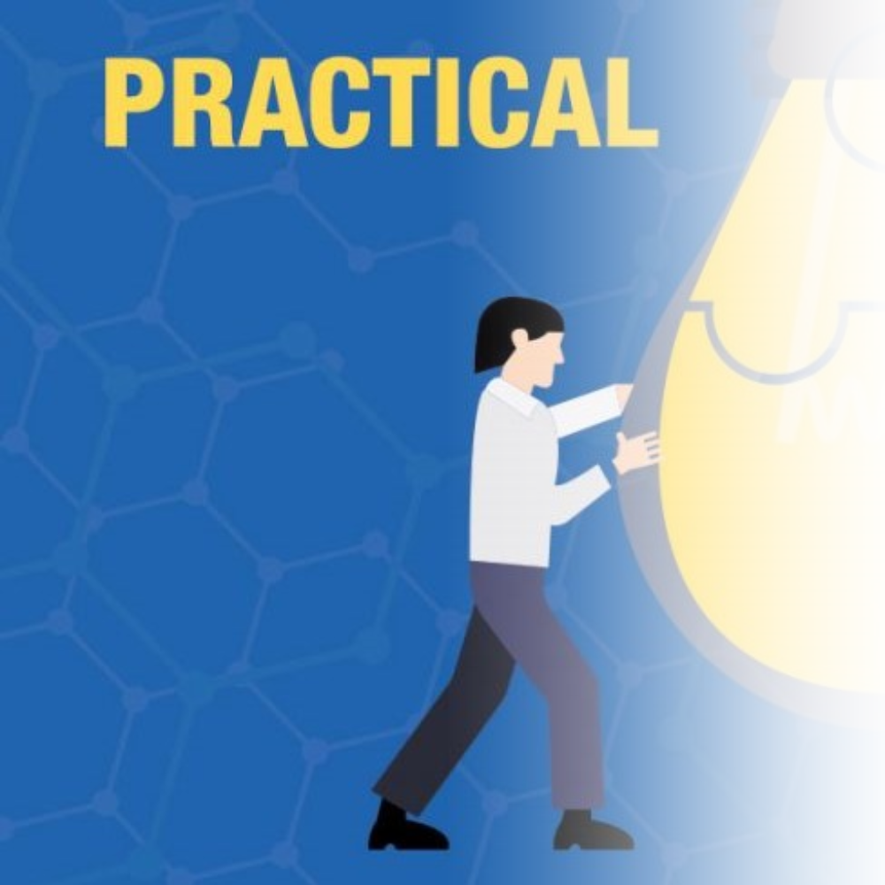
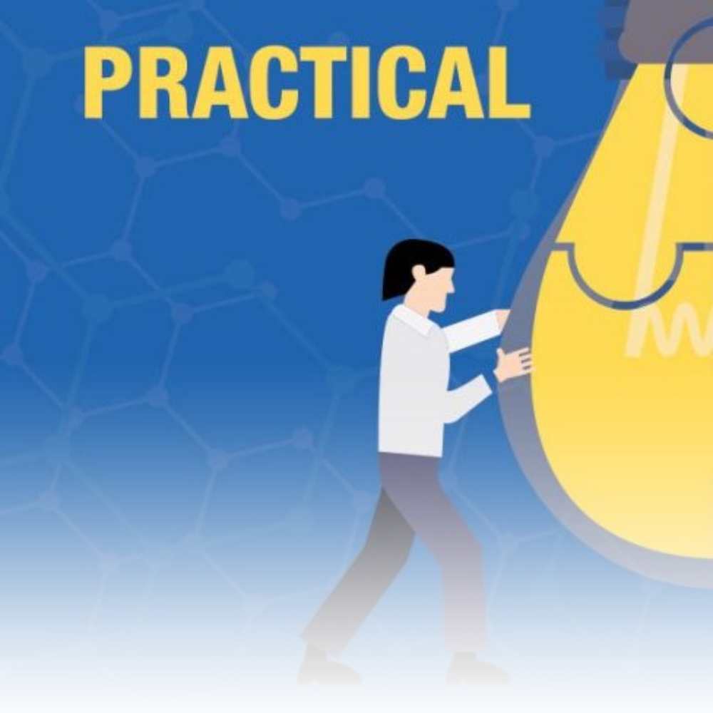

Technical Skills
I have experience in both HTML and CSS, as well as hosting platforms such as GitHub Pages and Blue Host. I also have fair experience using website drafting tools such as figma.
Social Skills
As you will see in my experiences, I have a great deal of social aptitude both inside and outside of the workplace. I pride myself on being empathetic and quickly understanding other people's situations in life from only a short story.

